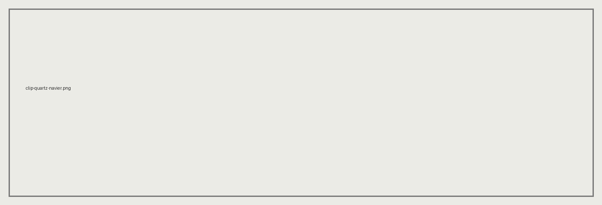
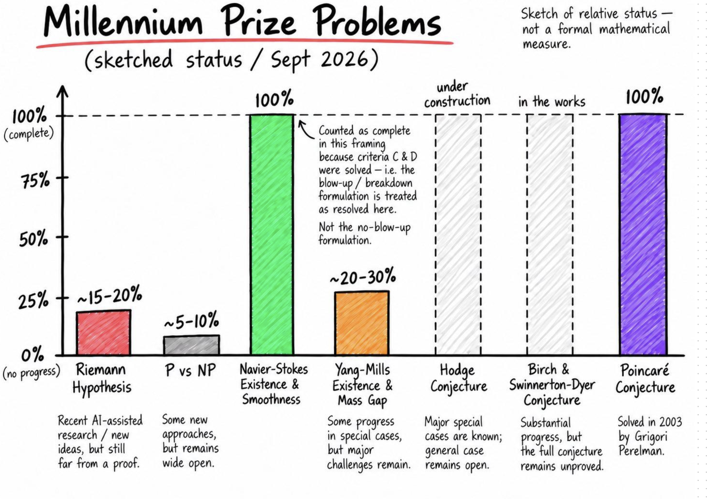
A result for forced Navier–Stokes. Independent human confirmation pending.
The Clay problem remains open; the mathematical credit is disputed.
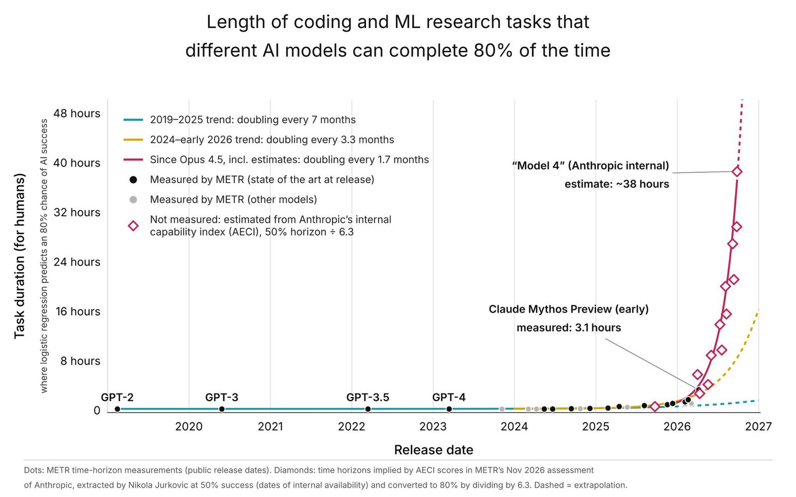
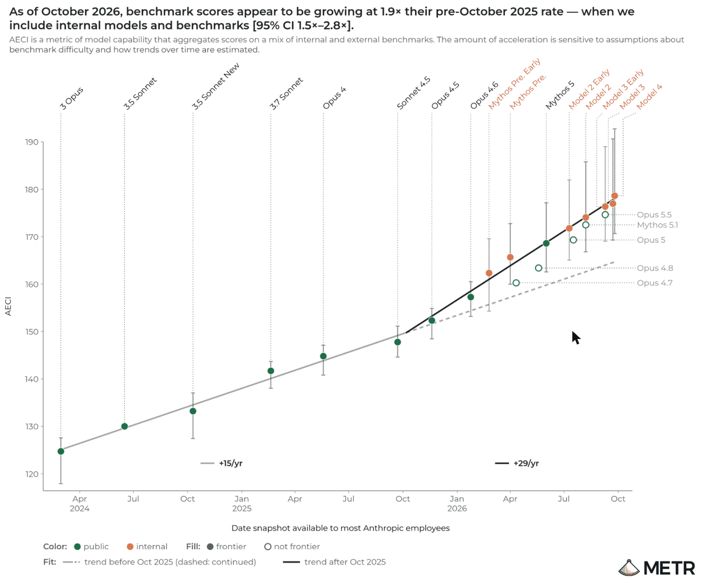
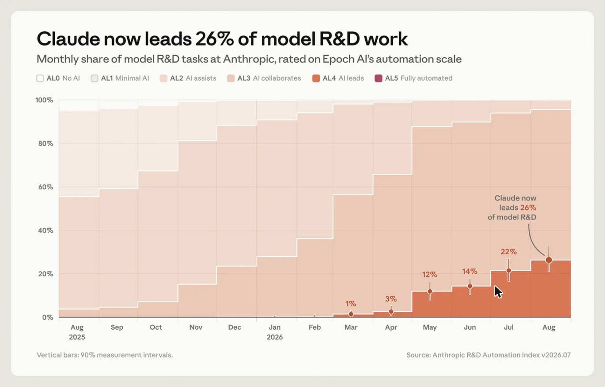
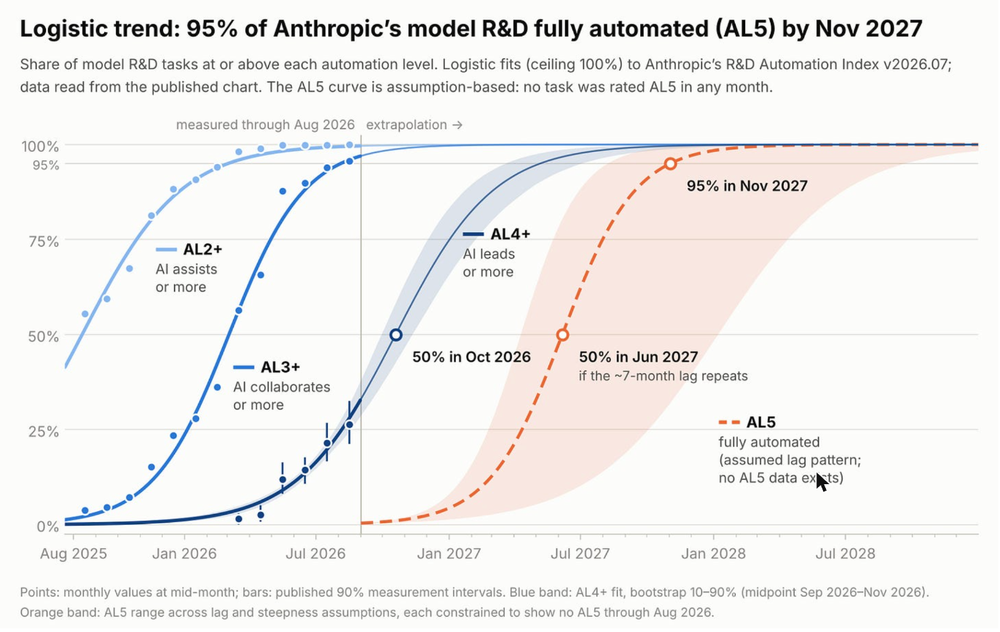
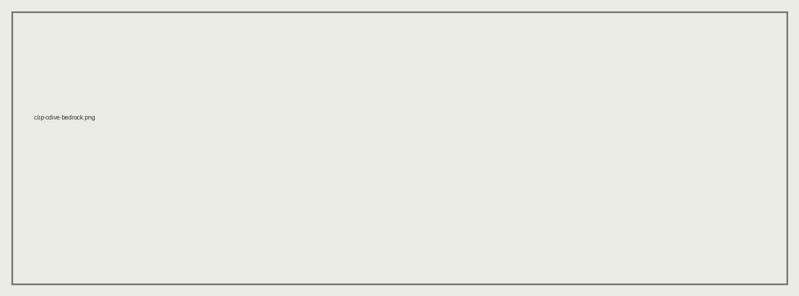
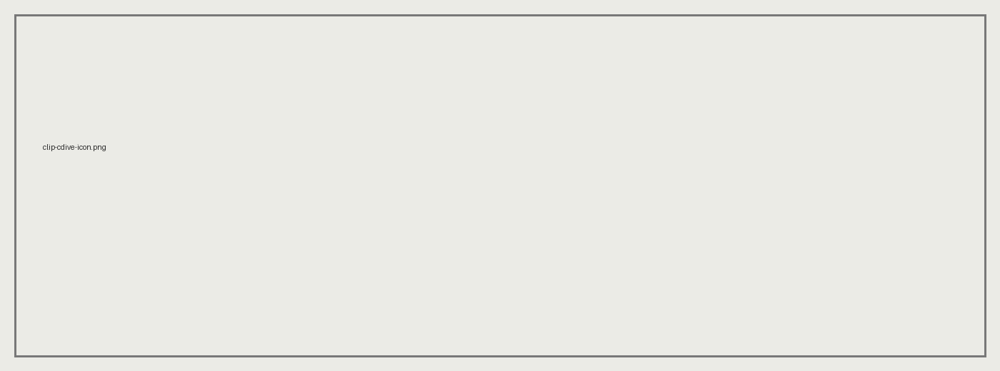
Space to play or pause · → to continue
The video could not load. Check your connection or watch it on Bedrock's website.
Space to play or pause · → to continue
The video could not load. Check your connection or watch it on Figure's website.
Space to play or pause · → to continue
The video could not load. Open it from the video folder.
Space to play or pause · → to continue
The video could not load. Open it from the video folder.
Space to play or pause · → to continue
The video could not load. Open it from the video folder.
Space to play or pause · → to continue
The video could not load. Open it from the video folder.
Space to play or pause · → to continue
The video could not load. Open it from the video folder.
Capability does not grow evenly across every task.
AI starts by covering small parts of a human job.
Capability grows unevenly. Test the exact task.
More steps become possible, with supervision.
A strong demo is not enough to hand over the whole job.
A possible destination. No date attached.
The frontier is jagged. Now look at construction drawings.
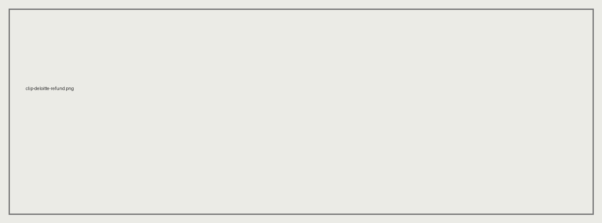

Rules. No intelligence.
Cheap, exact, auditable.
The same input always gives the same output.
The same fixed flow, with intelligence at the steps that read, classify or draft.
You still decide the path.
Intelligence decides the next step.
Powerful, metered, and never twice the same.
Frame it. Challenge its assumptions.
You decide what data leaves the building.
Verify in proportion to what is at stake.
Accountability stays with you.
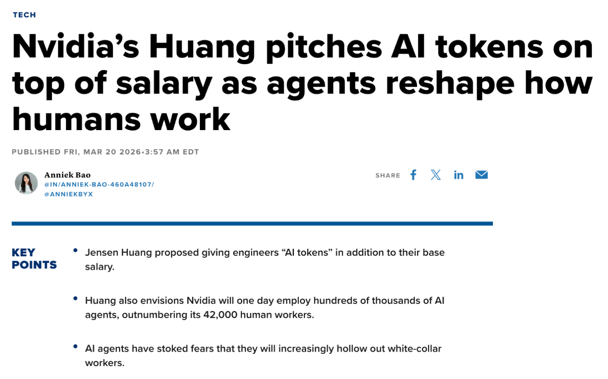
Know what you are deciding, and why.
Weigh the trade-offs. Make the call.
Own the consequences.
Earn it. Keep it.
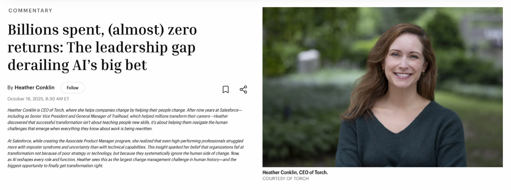
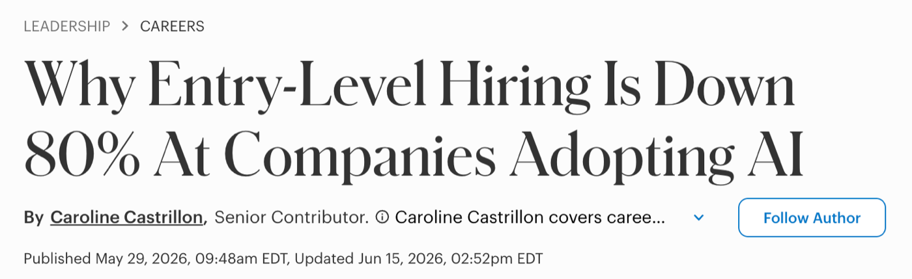
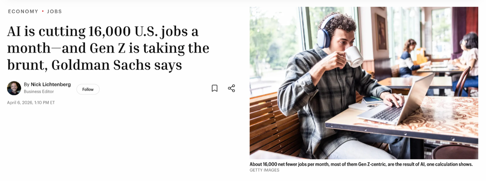
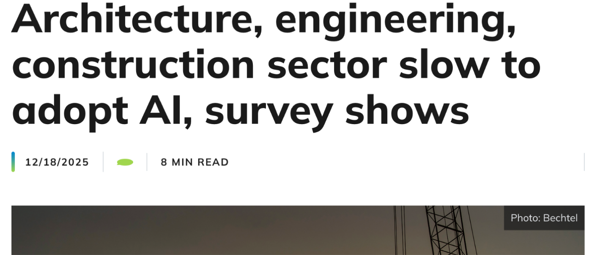
Scenario AI drafts a bid summary but misses what matters to the client.
What would help it get the next draft right?
Give it the client’s priorities and an example of a good result. Then check whether it improves.
What does your team know that AI never sees?
Scenario An agent handles supplier queries about payment status.
Choose one. Why does it need a human check?
Changing bank details. Verify the request through a trusted channel, then approve it.
Would you let the agent send replies without approval?
Scenario A supplier usually replies in one day. This week, it takes five.
Which signal would you ask AI to flag?
Flag slower replies before a delivery is missed. Someone checks the cause and decides whether to act.
When would you want that alert?
Scenario New drawings arrive Thursday. Your revised price is due Friday.
Which task goes to AI, and who checks it?
AI makes a first comparison. Specialists verify the changes and their impact. You approve the commitments.
What still needs a specialist?
Scenario Every bid still waits three days for expert review.
What has to change before you can deliver more?
Faster drafts do not remove the review queue. Improve review capacity and measure completed, accepted bids.
Where is the bottleneck in your team?
Scenario A supplier emails for a payment update. Your team handles the request.
Choose one step. What would still need a person?
Retrieve the payment status and draft a reply. Route missing data and disputes to a person.
Which process in your area could you start with?
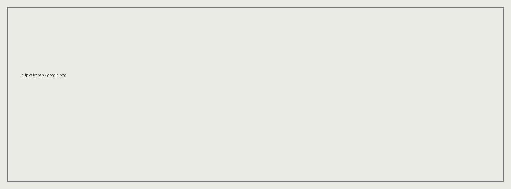
Scenario You have seen the demo. Your team has not used it yet.
What would you need to see before using it more widely?
Run a small trial. Compare time, accuracy and rework. Review each week; stop if quality drops.
What evidence would make you scale it?
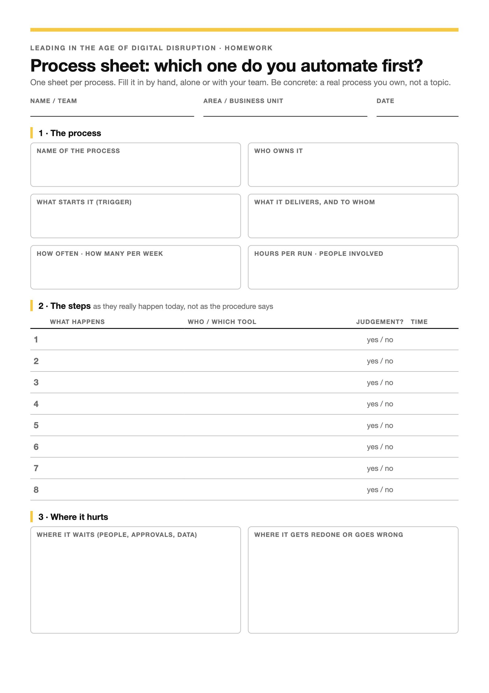
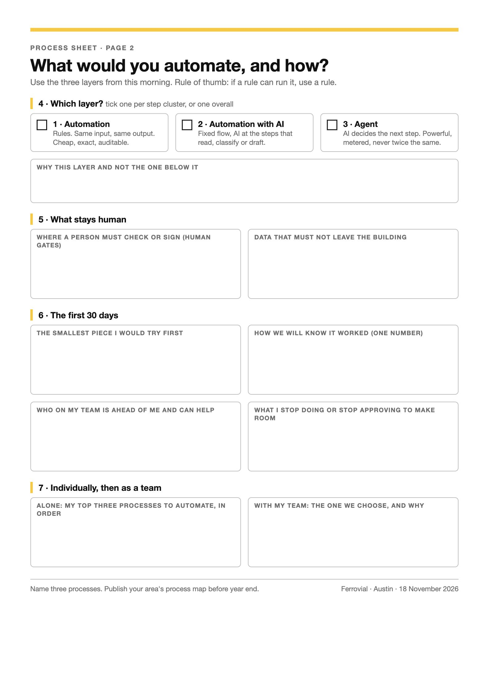
One real process.
One owner.
A first step you can take.
What starts it?
What does it deliver?
Who owns it?
Each step, its owner and its time.
Where is judgement needed?
Where does work wait?
Where is it done twice?
Where does it go wrong?
Rules, AI in a fixed flow, or an agent.
Why do you need that layer?
Where must a person approve?
Which data must stay inside?
One trial. One success measure.
Who helps, and what stops?
Pick your three candidates.
Agree the first with your team.
Make the work visible.
Make the next move concrete.
Six skills. One responsibility.
Spot changes early.
Ask what the report is missing.
Frame the problem.
Challenge the assumptions.
Use it yourself.
Test it on work that matters.
Combine expertise.
Build capacity around the task.
Make the call.
Review the evidence. Adjust.
Build trust. Take responsibility.
Your name stays on the decision.


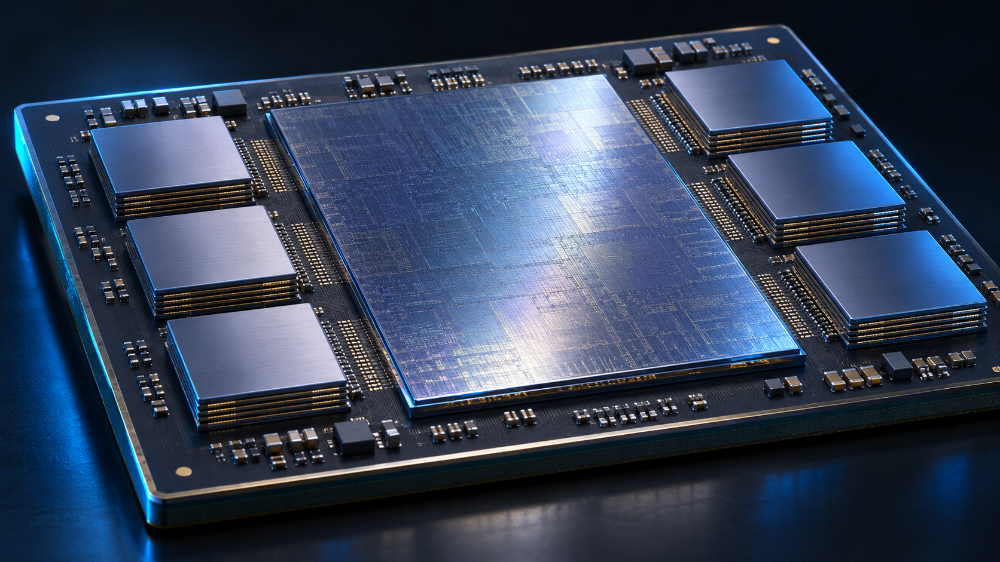